Chapter 7. 배열¶
'쉽게 풀어쓴 C언어 Express - 천인국' 10장 학습 내용
1절. 배열 기초
2절. 인덱스
3절. 배열 채우기
4절. 배열의 초기화
5절. 다양한 배열 예제
6절. 배열과 함수
7절. 정렬
8절. 선택 정렬
9절. 순차 탐색
10절. 이진 탐색
11절. 2차원 배열
1절. 배열 기초¶
배열이란?¶
- 배열을 사용하면 한 번에 여러 개의 변수를 생성할 수 있다.
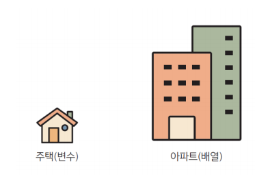
배열의 필요성¶
- 많은 변수를 한 번에 저장할 수 있다.
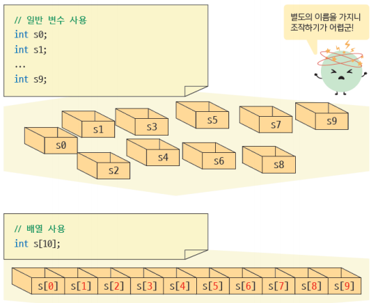
배열의 특징¶
- 배열은 메모리의 연속적인 공간에 저장한다.
- ex) 배열의 필요성에서 배열 요소 s[0]과 s[1]은 실제 메모리 상에서 붙어있다.
- 배열은 서로 관련된 데이터를 차례로 접근해서 처리할 수 있다.
- 데이터들이 서로 다른 이름을 사용하고 있다면 이들의 이름을 모두 기억해야 한다.
- 하지만 하나의 이름을 공유하고 번호만 다르다면 쉽게 기억할 수 있고 편하게 사용가능하다.
배열의 복사¶
// 아래의 명령어가 올바른 배열의 복사 방법이다.
int scores[SIZE];
int scores[SIZE];
int i;
for(i = 0; i < SIZE; i++)
score[i] = score[i];
// 배열의 원소는 반복문을 통해 하나씩 복사해야 한다.
배열의 비교¶
// 아래와 같은 명령어는 error를 발생시키는 명령어이다.
#include <stdio.h>
#define SIZE 5
int main(void)
{
int i;
int a[SIZE] = {1, 2, 3, 4, 5};
int b[SIZE] = {1, 2, 3, 4, 5};
if (a == b)
// 배열을 비교하는 것이 아님
printf("error");
else
printf("error);
return 0;
}
// 아래의 명령어가 올바른 배열의 복사 방법이다.
#include <stdio.h>
#define SIZE 5
int main(void)
{
int i;
int a[SIZE] = {1, 2, 3, 4, 5};
int b[SIZE] = {1, 2, 3, 4, 5};
for (i = 0; i < SIZE; i++)
{
if(a[i] != b[i])
printf("a[%d]와 b[%d]는 같지 않다.\n", i);
printf("a[%d]와 b[%d]는 같다.\n", i);
}
return 0;
}
// 배열의 원소는 반복문을 통해 하나씩 복사해야 한다.
2절. 인덱스¶
배열 선언¶
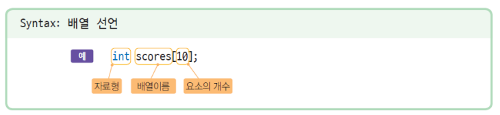
배열 원소와 인덱스¶
- 인덱스(index) : 배열 원소의 번호
- 인덱스는 1부터 시작되지 않고 0부터 시작된다.
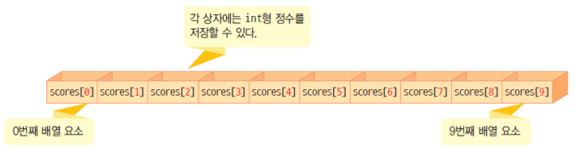
배열 선언의 예¶
int scores[60]; // 60개의 int형 값을 가지는 배열 scores
float cost[12]; // 12개의 float형 값을 가지는 배열 cost
char name[50]; // 50개의 char형 값을 가지는 배열 name
배열 선언의 주의할 점¶
- 배열의 크기를 나타낼 때는 항상 상수를 사용해야 한다.
- 변수를 배열의 크기로 사용하면 컴파일 오류가 난다.
- 또한 배열의 크기를 음수나 0, 실수로 하면 컴파일 오류가 발생한다.
int scores[]; // 배열의 크기를 지정해야 함
int scores[x]; // 배열의 크기가 변수일 수 없음
int scores[-5]; // 배열의 크기가 음수일 수 없음
int scores[3.1]; // 배열의 크기가 실수일 수 없음
기호 상수를 이용한 배열¶
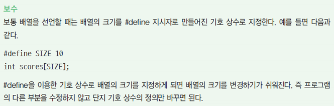
배열 요소 접근¶
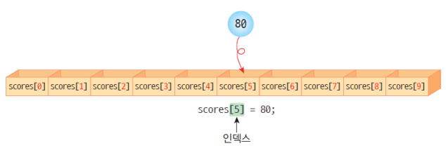
score[5] = 80;
score[1] = score[0];
score[i] = 100; // i는 정수 변수
score[i + 2] = 100; // 수식이 인덱스가 된다.
score[index[3]] = 100; // index[]는 정수 배열
배열 예제¶
#include <stdio.h>
int main(void)
{
int i; // 인덱스 값
int scores[5]; // 배열을 인덱스 값 5를 갖도록 생성
scores[0] = 10;
scores[1] = 20;
scores[2] = 30;
scores[3] = 40;
scores[4] = 50;
// 배열의 값 지정
for(i = 0; i < 5; i++)
printf("scores[%d] = %d\n", i, score[i]);
// for문을 통해 배열 출력
return 0;
}
잘못된 인덱스 예제¶
- 인덱스가 배열의 크기를 벗어나게 되면 프로그램에 치명적인 오류를 발생시킨다.
- 배열이 인덱스 범위를 벗어나지 않도록 주의해야 한다.
int score[5]; // score[5]는 인덱스가 0 ~ 4인 배열을 생성한다는 의미
score[5] = 60; // 인덱스는 0 ~ 4까지 있기 때문에 score[5]는 존재하지 않는 배열 공간
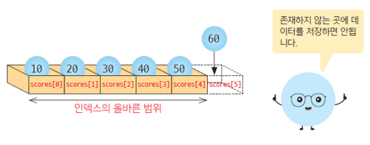
3절. 배열 채우기¶
배열과 반복문¶
- 배열의 가장 큰 장점은 반복문을 사용해서 배열의 원소를 간편하게 처리할 수 있다는 점이다.
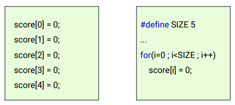
배열 난수로 채우는 예제¶
#include <stdio.h>
#include <stdlib.h> // 랜덤함수 헤더
#define SIZE 5 // 배열 크기 5로 고정
int main(void)
{
int i; // 인덱스의 값 변수로 지정
int scores[SIZE]; // 배열 생성 (크기는 정의한 SIZE 만큼)
for(i = 0;i < SIZE; i++) // 배열에 랜덤 난수 저장
scores[i] = rand() % 100;
for(i = 0;i < SIZE; i++) // 배열에 저장한 랜덤 난수 출력
printf("scores[%d] = %d\n", i, scores[i]);
return 0;
}
성적 평균 계산 예제¶
#include <stdio.h>
#define STUDENTS 5
int main(void)
{
int scores[STUDENTS]; // 배열 생성
int sum = 0; // 합을 저장할 변수 0으로 초기화
int i, average;
for (i = 0; i < STUDENTS; i++) // 학생 수 만큼 성적을 입력하는 반복문
{
printf("성적을 입력하세요 :");
scanf("%d", &scores[i]); // 성적을 배열에 저장
}
for (i = 0; i < STUDENTS; i++) // 입력한 성적을 모두 더하는 반복문
sum += scores[i];
average = sum / STUDENTS; // 합 / 학생수 = 평균
printf("성적 평균 = %d\n", average); // 평균 출력
}
4절. 배열의 초기화¶
배열의 초기화¶
- 배열의 초기값들을 콤마로 분리하여 중괄호로 감싼 후에 배열을 선언한다.
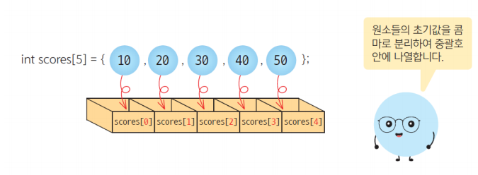
- 초기값의 개수가 배열보다 적은 경우는 앞의 요소들만 초기화되고 나머지는 0으로 초기화된다.
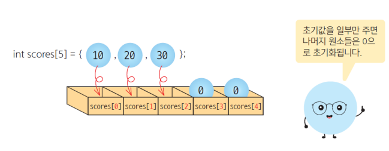
- 초기화 후에 배열의 크기를 비워두면 컴파일러가 자동으로 초기값의 개수만큼 크기를 지정한다.
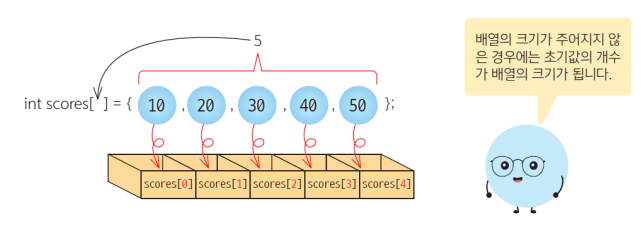
초기값이 주어지지 않았다면 ?¶
- 만약 초기값이 주어지지 않은 지역 변수로 선언된 배열이라면, 일반적인 지역 변수와 마찬가지로 아무 의미 없는 쓰레기 값들이 들어간다.
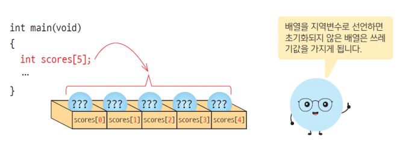
배열의 초기값 주의사항¶
- 배열의 모든 요소를 10으로 초기화하려고 할 때,
int scores[10] = {10};
// 위와 같이 초기화를 하면 첫 번째 요소만 10이 되고 나머지는 전부 0이 된다.
int scores[10] = {10, 10, 10, 10, 10, 10, 10, 10, 10, 10};
// 올바른 초기화 방법
배열의 초기값 주의사항 2¶
- 배열에서 초기화할 때를 제외하면 중괄호로 값을 묶어서 대입할 수 없다.
- 아래와 같이 사용하면 컴파일 오류가 발생한다.
- 배열에 값을 저장하려면 반드시 각 배열 요소에 값을 대입해야 한다.
#define SIZE 3
int main(void){
int scores[SIZE];
scores = {6, 7, 8}; // 배열에 값을 묶어서 대입하면 컴파일 오류가 발생함
}
5절. 다양한 배열 예제¶
배열 원소의 개수 계산¶
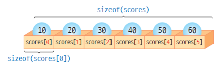
int scores[] = {1, 2, 3, 4, 5, 6};
int i, size;
size = sizeof(scores) / sizeof(scores[0]);
// sizeof(scores)는 배열 scores 전체의 개수를 계산하고, sizeof(scores[0])은 배열 한 개를 계산함
// 즉 size = 6 / 1 = 6
for (i = 0; i < size; i++)
printf("%d", scores[i]);
배열 원소의 개수 계산 2¶
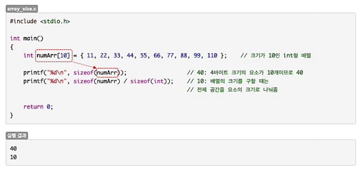
주사위 던지기 예제¶
// Lab1 : 주사위 던지기
#include <stdio.h>
#include <stdlib.h>
#define DICE_NUM 6 // DICE 면의 수를 6으로 정의한다.
int main(void)
{
int freq[DICE_NUM] = { 0 }; // 주사위의 면의 수만큼 배열 freq를 생성한다.
int i; // for문에 사용할 변수 i를 생성한다.
for (i = 0; i < 10000; i++) // 주사위를 10000번 던진다.
{
++freq[rand() % 6]; // 배열의 무작위 면이 나오는 횟수를 더한다.
}
printf("=========================\n");
printf("숫자\t빈도\n"); // 숫자와 빈도를 출력한다.
printf("=========================\n");
for (i = 0; i < DICE_NUM; i++) // 주사위 면의 숫자만큼 출력을 반복한다.
{
printf("%d\t%d\n", i + 1, freq[i]);
// 주사위 면 1의 값이 나온 횟수부터 차례대로 입력한다.
// 여기서 i는 0부터 시작하므로 i + 1을 해서 1 ~ 6까지의 수를 입력한다.
}
return 0;
}
극장 예약 시스템 예제¶
// Lab2 : 극장 예약 시스템
#include <stdio.h>
#define SEATS 10
int main(void)
{
char answer1; // 좌석 예약 여부를 입력받을 변수 answer1을 생성한다.
int answer2, i; // 어느 좌석을 선택할지 입력받을 변수 answer2와 for문에 이용할 변수 i를 생성한다.
int movie_seat[10] = { 0 }; // 좌석 10개를 저장할 배열을 생성하고 0으로 초기화한다.
while (1) // 무한반복문
{
printf("좌석을 예약하시겠습니까? (y 또는 n) "); // 좌석을 예약할 것인지 출력한다.
scanf_s(" %c", &answer1, 4); // 대답을 입력받고 변수 answer1에 저장한다.
if (answer1 == 'y') // 만약 대답이 y라면 좌석을 예약한다.
{
printf("-----------------------\n");
printf("1 2 3 4 5 6 7 8 9 10\n"); // 좌석 수를 출력한다.
printf("-----------------------\n");
for (i = 0; i < SEATS; i++) // 좌석의 수만큼 반복한다.
{
printf("%d ", movie_seat[i]);
// 앞에서 배열을 초기화했으므로 0 또는 1이 출력된다.
// 1이 출력되면 예약된 좌석, 0이 출력되면 예약하지 않은 좌석이다.
}
printf("\n"); // 줄바꿈
printf("몇 번째 좌석을 예약하시겠습니까? "); // 어느 좌석을 예약할 것인지 출력한다.
scanf_s("%d", &answer2); // 입력받은 좌석의 번호를 변수 answer2에 저장한다.
if (answer2 <= 0 || answer2 > SEATS) // 만약 answer2의 값이 1 ~ 10 사이의 값이 아니라면
{
printf("1부터 10 사이의 숫자를 입력하세요.\n"); // 변수를 다시 입력받는다.
continue; // 다시 반복문을 실행
}
if (movie_seat[answer2 - 1] == 0) // 만약 변수 answer2 - 1의 배열값이 0이라면
{
movie_seat[answer2 - 1] = 1; // 그 자리에 1을 저장한다.
printf("예약되었습니다.\n"); // 예약됐다고 출력한다.
}
else // 만약 변수 answer2 - 1 의 배열값이 1이라면
{
printf("이미 예약된 자리입니다.\n"); // 이미 예약된 자리라고 출력한다.
}
}
if (answer1 == 'n') // 만약 대답이 n이라면 그대로 반복문을 종료한다.
return 0;
}
return 0;
}
6절. 배열과 함수¶
배열과 함수¶
- 배열의 경우에는 사본이 아닌 원본이 전달된다.
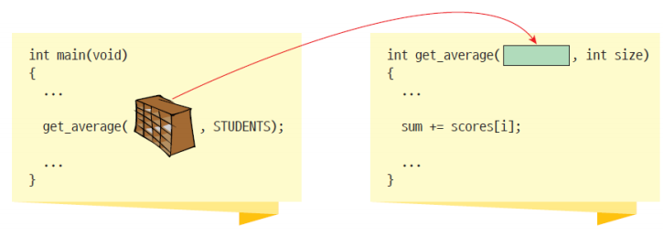
- 함수 : 매개변수와 인수
- 매개변수 : 함수 바깥에서 전달된 값이 저장되는 변수
- 인수 : 함수를 호출할 때 전달하는 값이나 변수
#include <stdio.h> int plus(int a, int b); // 함수의 원형 출력 int main(void){ int point1; // 과목 점수 1 int point2; // 과목 점수 2 scanf("%d %d", &point1, &point2); if (plus(point1, point2) >= 150) // plus는 함수, point1과 point2는 인수 printf("합격\n"); else printf("불합격\n"); return 0; } int plus(int a, int b){ // 함수 plus에 위치한 int a, int b는 매개변수 int result; result = a + b; return result; // 과목 점수의 합을 반환 }
배열이 함수의 인수인 경우¶
// 예시 코드
#include <stdio.h>
#define SIZE 7
void modify_array(int a[], int size); // 함수의 원형 출력
void print_array(int a[], int size); // 함수의 원형 출력
int main(void){
int list[SIZE] = {1, 2, 3, 4, 5, 6, 7}; // 배열 초기화
print_array(list, SIZE); // 배열 출력 함수 실행
modify_array(list, SIZE); // 배열의 값들을 1씩 더하는 함수 실행
print_array(list, SIZE); // 배열 출력 함수 실행
// 1씩 값이 더해진 배열이 출력됨
return 0;
}
void modify_array(int a[], int size){ // 1씩 더하는 함수
int i;
for (i = 0; i < size; i++)
++a[i];
}
void print_array(int a[], int size){ // 배열을 출력하는 함수
int i;
for (i = 0; i < size; i++)
printf("%3d ", a[i]);
printf("\n");
}
// 예시 출력
// 1 2 3 4 5 6 7
// 2 3 4 5 6 7 8
원본 배열의 변경 금지하기¶
void print_array(const int a[], int size){// const를 사용하면 함수 안에서 a[]의 값을 변경할 수 없게 된다.
...
a[0] = 100;
// 위를 실행하면 컴파일 오류가 발생한다.
}
7절. 정렬¶
정렬¶
- 정렬은 물건을 크기 순으로 오름차순이나 내림차순으로 나열하는 것을 의미한다.
- 컴퓨터 프로그래밍을 배울 때 가장 기본적이며 중요한 알고리즘 중 하나이다.
- 정렬은 자료 탐색에 있어서 필수적이다.
8절. 선택 정렬¶
선택 정렬¶
- 선택 정렬(selection sort) : 정렬이 안된 숫자들 중 최솟값을 선택하여 배열의 첫 번째 요소와 교환하는 행동
- 오른쪽 배열에서 가장 작은 숫자를 선택하여 왼쪽 배열로 이동하는 작업을 되풀이 한다.
- 선택 정렬은 오른쪽 배열이 공백상태가 될 때까지 이 과정을 되풀이하는 정렬기법이다.
| 왼쪽 배열 | 오른쪽 배열 | 설명 |
|---|---|---|
| () | (5, 3, 8, 1, 2, 7) | 초기상태 |
| (1) | (5, 3, 8, 2, 7) | 1 선택 |
| (1, 2) | (5, 3, 8, 7) | 2 선택 |
| (1, 2, 3) | (5, 8, 7) | 3 선택 |
| (1, 2, 3, 5) | (8, 7) | 4 선택 |
| (1, 2, 3, 5, 7) | (8) | 5 선택 |
| (1, 2, 3, 5, 7, 8) | () | 6 선택 |
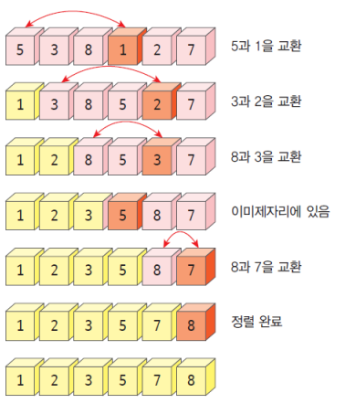
#### 선택 정렬 예제
#include <stdio.h>
#define SIZE 10
int main(void)
{
int list[SIZE] = {3, 2, 9, 7, 1, 4, 8, 0, 6, 5};
int i, j, temp, least;
for(i = 0; i < SIZE - 1; i++)
// SIZE - 1을 하는 이유 : 배열의 index는 0 ~ 9까지이다.
// 여기서 배열의 마지막 숫자는 가장 큰 숫자가 남을 것이기 때문에 정렬하지 않아도 된다.
{
least = i; // 최솟값을 i 번째 원소로 설정
for(j = i + 1; j < SIZE; j++)
// i + 1 번째 원소부터 최솟값을 찾는 이유 : 이미 최솟값을 i 번째 원소로 설정해놨기 때문이다.
{
if(list[j] < list[least])
least = j;
// 현재 최솟값으로 저장되어 있는 i(least)보다 더 작은 정수를 발견하면 ?
// 그 정수가 들어있는 index를 least에 저장한다.
}
// list[i]와 list[least]를 서로 복사한 후 교환하는 과정
temp = list[i];
list[i] = list[least];
list[least] = temp;
// i 번째 원소와 least 위치의 원소를 교환하기 위해서는 여분의 변수인 temp가 필요
// Why? : 값을 저장하지 않으면 복사하는 과정에서 하나의 값이 없어지기 때문이다.
}
for(i = 0; i < SIZE; i++)
printf("%d", list[i]);
printf("\n");
return 0;
}
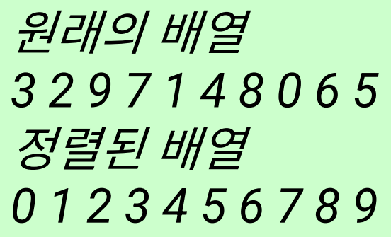
#### 선택 정렬 변수의 값을 교환할 때
- 옳지 않은 방법
(1) score[i] = score[least];
(2) score[least] = score[i];
> 위와 같은 방법으로 진행하면 score[i]의 기존 값이 파괴되는 것을 볼 수 있다.
- 올바른 방법
(1) temp = list[i];
(2) list[i] = list[least];
(3) list[least] = temp;
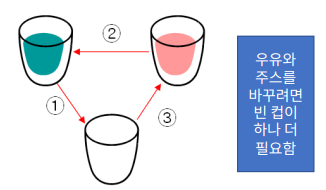
9절. 순차 탐색¶
순차 탐색¶
- 순차 탐색은 배열의 원소를 순서대로 하나씩 꺼내서 탐색키와 비교하고 원하는 값을 찾아가는 방법
> 순차 탐색은 일치하는 항목을 찾을 때까지 비교를 계속 진행함
> 순차 탐색은 첫 번째 요소에서 성공할 수도 있고 마지막 요소까지 가야 찾을 수도 있음
> 평균적으로는 절반 정도의 배열요소와 비교
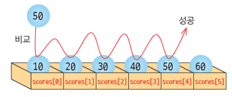
순차 탐색 예시¶
#include <stdio.h>
#define SIZE 10
int main(void)
{
int key, i;
int list[SIZE] = {1, 2, 3, 4, 5, 6, 7, 8, 9};
printf("탐색할 값을 입력해라 : ");
scanf("%d", &key);
for(i = 0; i < SIZE; i++)
// list[i]와 key.를 비교하고, 만약 list[i] == key일 경우 인덱스를 출력
{
if(list[i] == key)
printf("탐색 성공 인덱스 = %d\n", i);
}
printf("탐색 종료\n");
return 0;
}
최솟값 탐색 예제¶
// Lab3 : 최솟값 찾기
#include <stdio.h>
#include <stdlib.h>
#include <time.h>
#define SIZE 10 // 배열의 크기를 10으로 설정한다.
int main(void)
{
srand((unsigned)time(NULL)); // 난수를 발생시킨다.
int prices[SIZE] = { 0 }; // 값을 저장할 배열을 SIZE 크기만큼 생성하고, 0으로 초기화한다.
int i, minimum; // 배열에 사용할 변수 i와 최솟값을 저장하면서 갱신할 변수를 생성한다.
printf("---------------------------\n");
printf("1 2 3 4 5 6 7 8 9 10\n"); // 10개의 숫자를 출력할 메뉴 출력
printf("---------------------------\n");
for (i = 0; i < SIZE; i++) // 배열의 크기만큼 반복한다.
{
prices[i] = (rand() % 100) + 1; // 배열의 각 값에 1 ~ 100까지의 수를 저장한다.
printf("%d ", prices[i]); // 각 배열을 출력한다.
}
printf("\n"); // 줄바꿈
minimum = prices[0]; // 일단 최솟값을 첫 번째 값으로 설정한다. for문 안에 들어갈 필요 X
for (i = 0; i < SIZE; i++) // 배열의 크기만큼 반복한다.
{
if (prices[i] < minimum) // 만약 prices[i]의 값이 현재 최솟값보다 작다면
minimum = prices[i]; // 현재 최솟값을 prices[i]로 변경한다.
}
printf("최소값은 %d 입니다.\n", minimum); // 최솟값을 출력한다.
return 0;
}
10절. 이진 탐색¶
이진 탐색¶
- 이진 탐색(binary search) : 정렬된 배열의 중앙에 위치한 원소와 비교 되풀이
- 단, 탐색하려는 배열이 미리 정렬되어 있어야 한다.
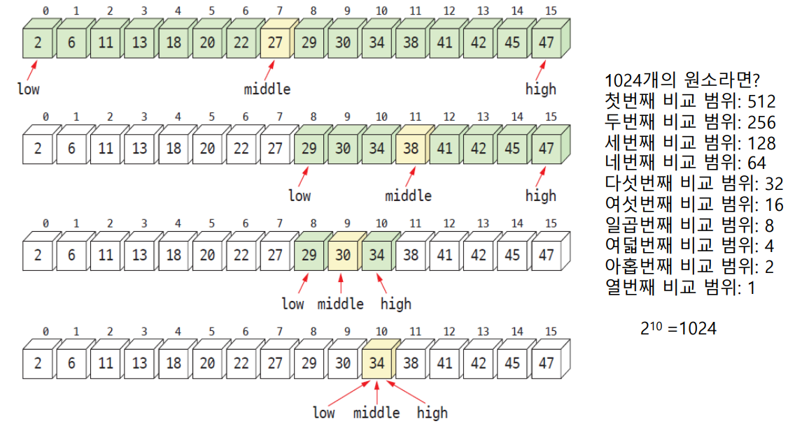
이진 탐색 예시¶
// 찾아야 하는 값인 key값의 인덱스를 출력하는 예제
#include <stdio.h>
#define SIZE 16
int binary_search(int list[], int n, int key);
int main(void)
{
int key;
int grade[SIZE] = {2, 6, 11, 13, 18, 20, 22, 27, 29, 30, 34, 38, 41, 42, 45, 47};
printf("탐색할 값을 입력해라 : ");
scanf("%d", &key);
printf("탐색 결과 = %d\n", binary_search(grade, SIZE, key));
return 0;
}
int binary_search(int list[], int n, int key)
// 배열을 이진 탐색하는 함수
{
int low, high, mid;
low = 0;
high = n - 1;
// 배열의 인덱스 값의 최대를 high, 최소를 low로 설정
while(low <= high) // 이진 탐색이 가능할 때까지
{
printf("[%d %d]\n", low, high);
// 각각 low값과 high 값 출력
mid = (low + high) / 2;
// 중간 위치 계산
if(key == list[mid])
return mid
// key값이 중간 값과 일치한다면 중간 값 반환
else if(key > list[middle])
low = mid + 1;
// key값이 중간 값보다 크다면, 중간 값이었던 수보다 1을 더한 수를 최솟값으로 설정
else
high = mid - 1;
// key값이 중간 값보다 작다면, 중간 값이었던 수보다 1을 뺀 수를 최댓값으로 설정
}
return -1; // 이진 탐색이 안되는 배열인 경우 -1 반환
}
11절. 2차원 배열¶
2차원 배열¶
- 데이터 자체가 2차원인 경우 사용하는 배열
- ex) 디지털 이미지, 보드 게임 등
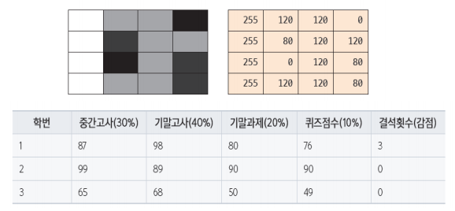
- 2차원 배열의 인덱스
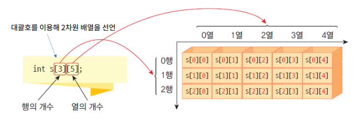
2차원 배열 예제¶
#include <stdio.h>
#include <stdlib.h>
#include <time.h>
#define ROWS 3
#define COLS 5
int main(void)
{
int s[ROWS][COLS];
int i, j;
srand((unsigned)time(NULL));
// 난수 생성기
for (i = 0; i < ROWS; i++)
// 배열의 행과 열에 랜덤 난수를 설정
{
for(j = 0;j < COLS; j++)
s[i][j] = rand() % 100;
}
for (i = 0; i < ROWS; i++)
// 배열의 행과 열에 설정된 랜덤 난수를 출력
{
for(j = 0;j < COLS; j++)
printf("%02d", s[i][j]);
printf("\n");
}
return 0;
}
2차원 배열 초기화¶
- 행과 열이 모두 주어진 2차원 배열 초기화
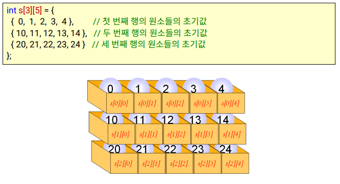
- 행이 주어지지 않고 열만 주어진 2차원 배열 초기화
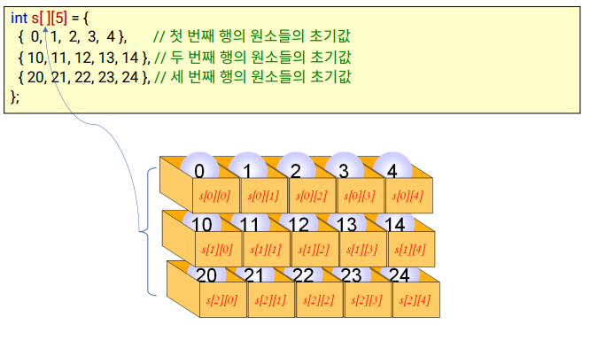
- 행이 주어지지 않고 열만 주어진 2차원 배열 초기화 - 2
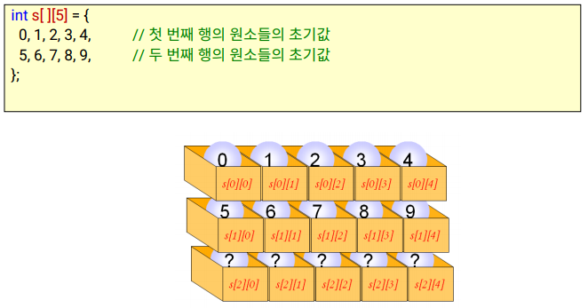
행렬 예제¶
- 다차원 배열을 이용한 행렬의 표현 예제
#include <stdio.h> #define ROWS 3 #define COLS 3 int main(void) { int A[ROWS][COLS] = { {2, 3, 0}, {8, 9, 1}, {7, 0, 5} }; int B[ROWS][COLS] = { {1, 0, 0}, {1, 0, 0}, {1, 0, 0} }; int C[ROWS][COLS]; int r, c; for(r = 0; r < ROWS; r++) // 두 개의 행렬을 더한 값을 행렬 C에 저장 { for(c = 0; c < COLS; c++) C[r][c] = A[r][c] + B[r][c]; } for(r = 0; r < ROWS; r++) // 행렬 C에 저장된 값을 출력 { for(c = 0; c < COLS; c++) printf("%d", C[r][c]); printf("\n"); } return 0; }
다차원 배열 주의사항¶
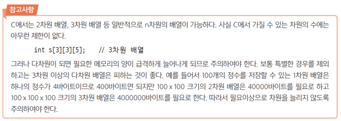